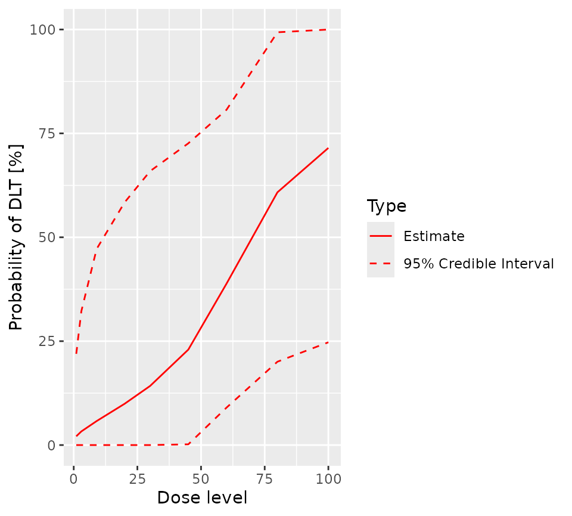

Defining the design
A CRM study consists of six basic elements:
- The dose grid
- The dose-toxicity model
- The increment rule_1
- The dose recommendation rule1
- The cohort size1
- The stopping rule
1: Note that in crmPack, the increment, dose selection
and cohort size rules are collectively known as the escalation
rules.
There are many, many possible choices for each element. In this introduction, we make simple choices for the value of each element.
We start by loading the crmPack package …
library(crmPack)
#> Loading required package: ggplot2
#> Registered S3 method overwritten by 'crmPack':
#> method from
#> print.gtable gtable
#> Type crmPackHelp() to open help browser
#> Type crmPackExample() to open example… and defining each element in turn.
The dose grid
First, we list the doses that might be used during the trial.
There is no commitment to use every dose in the grid. Here we define
a grid of 9 doses ranging between 1 and 100. crmPack is
agnostic with respect to the units used to measure the doses. The only
requirements are that the dose grid is ordered and one dimensional.
Additional doses can be added whilst the trial is running. This will not affect the validity of the results of the trial prior to the addition, but will probably affect the trial’s operating characteristics.
The dose toxicity model
Next, define the dose toxicity model.
# Initialize the CRM model.
model <- LogisticLogNormal(
mean = c(-0.85, 1),
cov = matrix(c(1, -0.5, -0.5, 1), nrow = 2),
ref_dose = 56
)In crmPack, the LogisticLogNormal class
fits a model of the following form:
where
is a reference dose (specified by the ref_dose argument to
the LogisticLogNormal function above) and the prior joint
distribution of
and
is
The mean and covariance matrices are defined by the mean
and cov parameters to the LogisticLogNormal
call. So the code above defines the prior joint distribution of
and
to be
It is easy to obtain a visual representation of the prior:
vignetteMcmcOptions <- McmcOptions(burnin = 100, step = 2, samples = 1000)
prior_samples <- mcmc(
data = empty_data,
model = model,
options = vignetteMcmcOptions
)
plot(prior_samples, model, empty_data)
The escalation rules
The maximum increment
Now, we define the maximum possible increment between the dose used in current cohort and the dose used in the next, regardless of likely toxicity.
# Choose the rule for dose increments.
my_increments <- IncrementsRelative(
intervals = c(0, 30),
increments = c(2, 0.5)
)The rule we have chosen here defines the maximum possible increment
in terms of multiples of the highest dose so far administered: for doses
greater than 0 and less than 20, the maximum
increment is 100% x 2, or 200% of the highest dose used so far (or an
escalation to 100% x (1 + 2) = 300% of the highest dose used so far).
For doses of 20 or more, the maximum increment is 100% x
0.5, or 50% of the highest dose used so far, to a dose no more than 100%
x (1 + 0.5) = 150% of the highest dose used so far.
Note that a 2-fold increment corresponds to a 3-fold escalation.
In tabular form, based on the dose grid defined above, the maximum permitted escalation is
| Highest dose administered so far |
Maximum permitted increment | Maximum permitted dose |
|---|---|---|
| 1 | 2.0 | 3.0 |
| 3 | 6.0 | 9.0 |
| 9 | 18.0 | 27.0 |
| 20 | 40.0 | 60.0 |
| 30 | 45.0 | 75.0 |
| 45 | 67.5 | 112.5 |
| 60 | 90.0 | 150.0 |
| 80 | 120.0 | 200.0 |
| 100 | 200.0 | Not applicable |
So, if the highest dose used so far is 9, the highest
dose in the dose grid that can be used in the next cohort is
20, even if 30 or higher doses are deemed safe
by the NextBest rule.
Next, we define the rule for choosing the best dose for the next cohort
The NextBest rule for recommending the best dose for the next cohort
# Choose the rule for selecting the next dose.
my_next_best <- NextBestNCRM(
target = c(0.2, 0.35),
overdose = c(0.35, 1),
max_overdose_prob = 0.25
)Here, we choose to use Neuenschwander’s rule (Neuenschwander, Branson, and Gsponer 2008), in which the dose for the next cohort to be the dose (amongst those doses that are eligible for selection according to the escalation rule) that has the highest posterior chance of having a probability of toxicity in the target range - here [0.2, 0.35) - provided that the dose’s chance of having a probability of toxicity in the overdose range - here [0.35, 1.0] - is less than 0.25.
The cohort size
Now, we define the rule for choosing the size of the next cohort.
Note, the term “cohort size” is somewhat anachronistic. It is a hangover from the days of the 3+3 design. In the context of CRM trials, it is best interpreted as “the largest permitted interval between CRM model updates”. In a CRM trial, the model can be updated at any time and there is no mathematical need to halt recruitment to allow the model to be updated.
We elect to define the cohort size using a compound rule. Both the
dose to be used and the number of DLTs so far observed contribute to the
decision. The first part of the compound rule (my_size_1),
based on the dose to be used, permits the use a single patient run-in up
to and including a dose of 20. For doses above
20, the minimum cohort size is 3. The second
part of the compound rule (my_size_2) also permits a single
patient run-in, so long as no DLTs have so far been observed. As soon as
the first DLT is reported, the minimum cohort size is 3. To
determine the actual size of the next cohort, the larger number
required by the two parts of the compound rule is used.
# Choose the rule for the cohort size.
my_size_1 <- CohortSizeRange(
intervals = c(0, 30),
cohort_size = c(1, 3)
)
my_size_2 <- CohortSizeDLT(
intervals = c(0, 1),
cohort_size = c(1, 3)
)
my_size <- maxSize(my_size_1, my_size_2)In other words, provided the dose is 20 or below and no
DLTs have been observed, a single patient cohort is permitted. In all
other cases, the required cohort size is 3.
The stopping rules
Now we create the rules that define when the trial’s objectives have
been met (or when it should be stopped for futility).
The futility rule is the easiest to explain: if twenty patients have
been recruited, the study should stop (my_stopping_3). The
success rule requires both of the following conditions to have been
met:
- At least three cohorts must have been treated
- The probability that the current estimate of the MTD is in the target toxicity range must be at least 0.5.
The trial will stop of either the futility rule or both components of the success rule are satisfied.
# Choose the rule for stopping.
my_stopping_1 <- StoppingMinCohorts(nCohorts = 3)
my_stopping_2 <- StoppingTargetProb(
target = c(0.2, 0.35),
prob = 0.5
)
my_stopping_3 <- StoppingMinPatients(nPatients = 20)
my_stopping <- (my_stopping_1 & my_stopping_2) | my_stopping_3The overall trial design
Finally, we combine all six elements of the design, together with the starting dose, to define the trial.
# Initialize the design.
design <- Design(
model = model,
nextBest = my_next_best,
stopping = my_stopping,
increments = my_increments,
cohort_size = my_size,
data = empty_data,
startingDose = 3
)We are now ready to use our trial definition, either to analyse a real trial or to simulate the long term operating characteristics of the design. These processes are described in their own vignettes here and here.